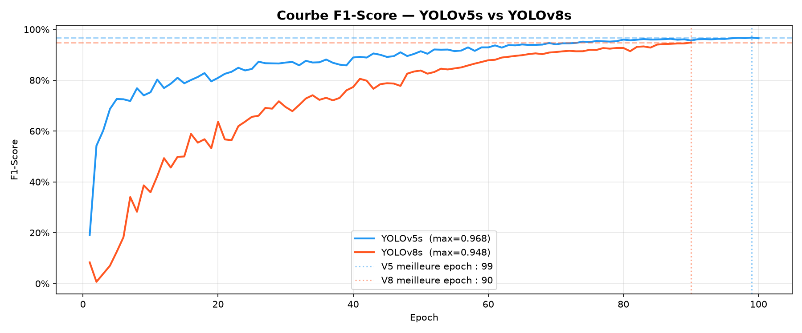
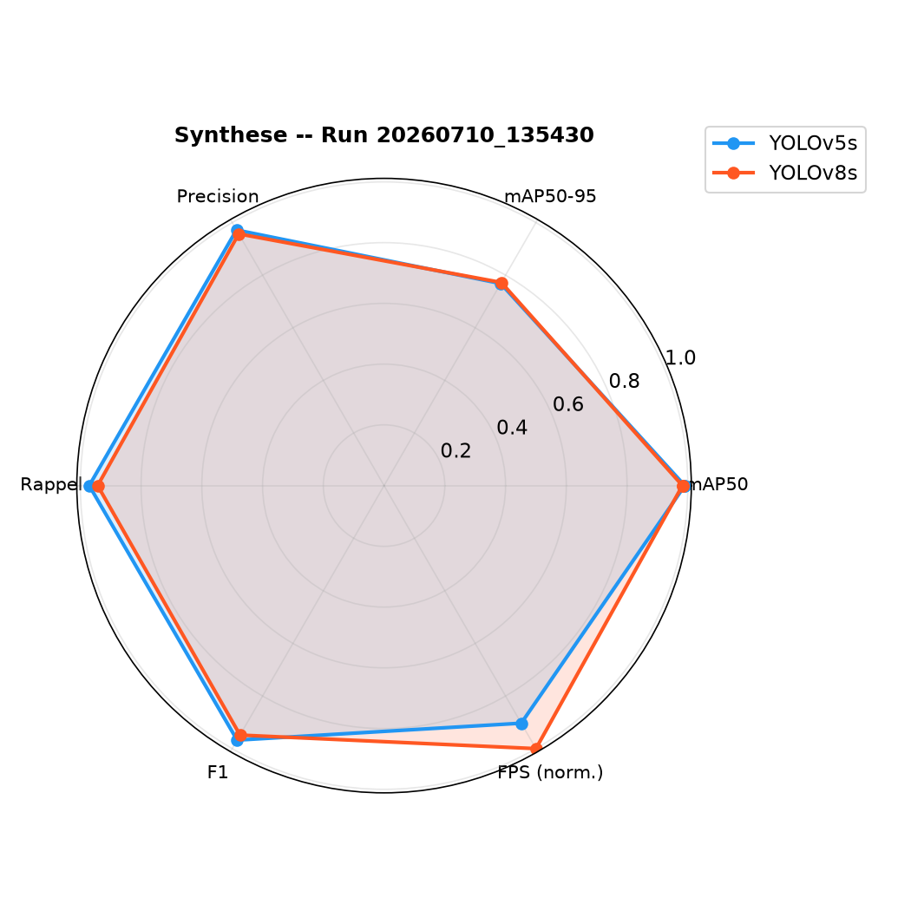

Comparaison sur Pascal VOC 2007
Deux expériences — entraînement de référence & version améliorée
Architectures → Expérience 1 → Améliorations → Expérience 2 → Conclusion
YOLOv5 & YOLOv8 — Présentation
YOLOv5s (2020)
Détecteur mono-étage (single-stage) publié par Ultralytics, écrit en PyTorch natif.
- Anchor-based — 3 anchors prédéfinis par échelle
- Backbone CSPDarknet + neck PANet
- ~7.2M paramètres — modèle léger et rapide
- Loss : CIoU (boîtes) + BCE (objet/classe)
YOLOv8s (2023)
Nouvelle génération Ultralytics, API unifiée et pipeline d'entraînement modernisé.
- Anchor-free — prédiction directe des centres
- Backbone C2f + neck PANet
- ~11.2M paramètres — plus profond
- Loss : DFL + CIoU (boîtes) + BCE (classe)
Point commun : les deux sont des détecteurs temps-réel mono-étage entraînés ici dans des conditions strictement identiques (mêmes epochs, batch, images, GPU) pour une comparaison équitable.
Architecture Comparée
Backbone
v5 : CSPDarknet — blocs C3 (CSP)
v8 : C2f — plus de connexions résiduelles, meilleur flux de gradient
Tête de détection
v5 : couplée + anchors prédéfinis
v8 : découplée (cls / box séparés) + anchor-free
Régression des boîtes
v5 : CIoU — point unique par coordonnée
v8 : DFL — distribution continue, localisation plus fine
| Caractéristique | YOLOv5s | YOLOv8s |
|---|---|---|
| Année | 2020 | 2023 |
| Paramètres | 7.2M | 11.2M |
| Approche anchors | Anchor-based | Anchor-free |
| Backbone | CSPDarknet (C3) | C2f |
| Tête | Couplée | Découplée |
| Loss boîtes | CIoU | DFL + CIoU |
Expérience 1 — Entraînement de Référence
🎯 Objectif
Premier entraînement « baseline » : YOLOv5s et YOLOv8s avec les hyperparamètres par défaut, sans optimisation particulière.
But : établir un point de référence pour mesurer l'impact des améliorations à venir.
⚙️ Configuration
- 100 epochs — batch 128 — 640×640 px
- Poids initiaux COCO pré-entraînés
- Augmentations standard (mosaic, HSV, flip)
- Optimiseur par défaut (SGD)
- GPU NVIDIA A40 — 48 GB VRAM
Exp 1 — Comparaison mAP

Exp 1 — Courbes de Loss

Exp 1 — Précision & Rappel

Exp 1 — Vitesse d'Inférence

Exp 1 — Bilan de la Première Expérience
Ce qu'on observe
- mAP50 : les deux atteignent ~99% en fin d'entraînement
- mAP50-95 : YOLOv8s nettement supérieur grâce à DFL
- Vitesse : YOLOv5s ~13.7 ms (73 FPS) vs YOLOv8s ~17.7 ms (56 FPS)
- YOLOv8s converge plus vite mais reste plus lourd
⚠️ Limites détectées
- Convergence instable (oscillations de précision/rappel)
- Pas d'analyse fine : distribution des classes, F1, mAP par classe
- Augmentations basiques → risque sur les classes rares
- Aucun export production (ONNX)
→ Ces limites motivent une 2ᵉ expérience améliorée.
🔧 Les Améliorations Apportées
Optimisations de code & d'entraînement entre l'expérience 1 et 2
Augmentations avancées
- Mixup & Copy-Paste
- Rotation, perspective, shear
cls_pwpour les classes rares
Optimisation entraînement
- Optimiseur AdamW
- Cosine LR + warmup
- close_mosaic en fin d'entraînement
Stratégie YOLOv8
- Fine-tuning en 2 phases
- Phase 1 : backbone gelé
- Phase 2 : réseau complet dégelé
Analyses ajoutées
- Distribution des classes
- mAP par classe
- Courbe F1-Score
Robustesse du code
- Runs horodatés (historique)
- Reprise auto. via checkpoints
- Chemins relatifs portables
Production
- Export ONNX
- Benchmark ONNX Runtime
- Radar de synthèse
Expérience 2 — Version Améliorée
🎯 Objectif
Ré-entraîner les deux modèles avec toutes les optimisations, pour un résultat plus robuste, plus réaliste et exploitable en production.
Mesure d'impact via des analyses fines (F1, mAP par classe, radar).
⚙️ Configuration
- 100 epochs — batch 128 — 640×640 px
- Optimiseur AdamW + Cosine LR + warmup
- Augmentations avancées (Mixup, Copy-Paste…)
- YOLOv8 : fine-tuning 2 phases
- GPU NVIDIA A40 — run
20260710_135430
Exp 2 — Comparaison mAP
.png)
Exp 2 — Courbes de Loss
.png)
Exp 2 — Précision & Rappel
.png)
Exp 2 — Courbe F1-Score (nouvelle analyse)

Exp 2 — Vitesse d'Inférence
.png)
Exp 2 — Synthèse Radar

Exp 2 — Tableau Récapitulatif
| Critère | YOLOv5s | YOLOv8s | Vainqueur |
|---|---|---|---|
| mAP50 (best) | 99.00% | 98.24% | YOLOv5s |
| mAP50-95 | 76.82% | 77.00% | YOLOv8s |
| Précision | 96.74% | 95.71% | YOLOv5s |
| Rappel | 96.27% | 94.00% | YOLOv5s |
| F1 (max) | 96.77% | 94.84% | YOLOv5s |
| Temps inférence | 19.73 ms | 17.83 ms | YOLOv8s |
| FPS | 50.7 | 56.1 | YOLOv8s |
Après optimisation, les scores sont plus réalistes : mAP50-95 ~77% pour les deux, écarts resserrés et équilibrés.
Expérience 1 vs Expérience 2
| Aspect | Exp 1 — Référence | Exp 2 — Améliorée |
|---|---|---|
| Optimiseur | SGD (défaut) | AdamW + Cosine LR + warmup |
| Augmentations | Standard | Mixup, Copy-Paste, perspective… |
| Fine-tuning v8 | Direct | 2 phases (freeze → unfreeze) |
| mAP50-95 | Écart marqué v5/v8 | Équilibré (~77% les deux) |
| Analyses | Basiques | + F1, mAP/classe, radar, distribution |
| Production | Aucune | Export ONNX + benchmark |
| Reproductibilité | Run unique | Runs horodatés + reprise auto. |
Apport des améliorations : une convergence plus stable, des métriques plus réalistes et exploitables, une analyse bien plus riche et un pipeline prêt pour la production.
Conclusion Finale
📌 Points clés à retenir
- Sur VOC 2007, les deux modèles sont excellents (~99% mAP50)
- Le choix dépend du besoin : précision (v5) vs vitesse & localisation (v8)
- La méthodologie compte autant que l'architecture — l'exp 2 le démontre
- Augmentations + AdamW + 2 phases = convergence stable
- Export ONNX rend les modèles prêts pour la production